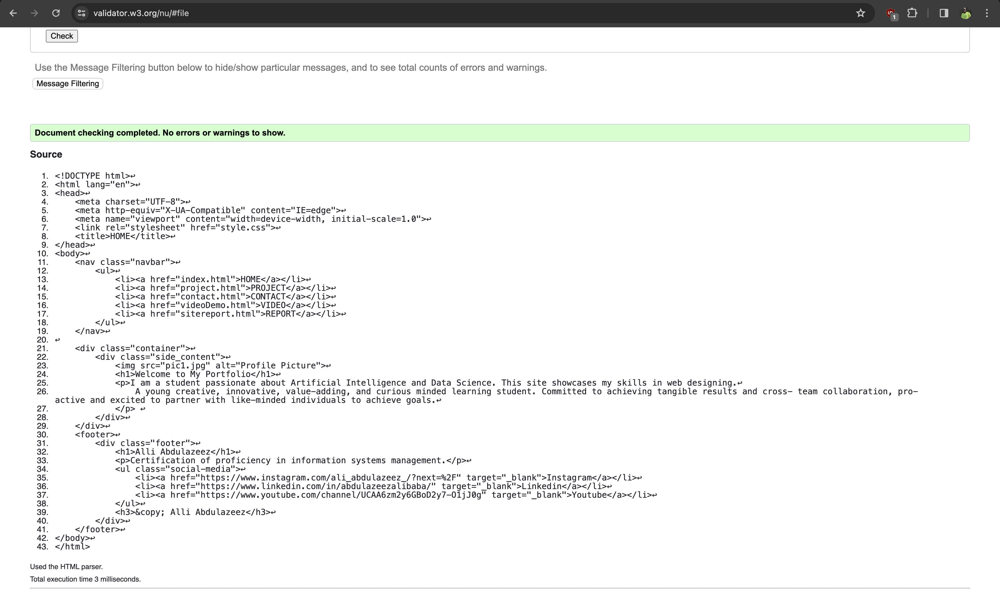
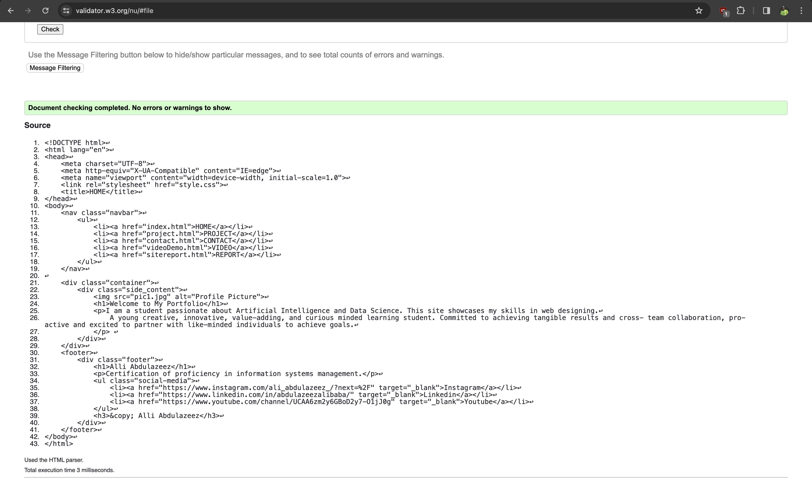
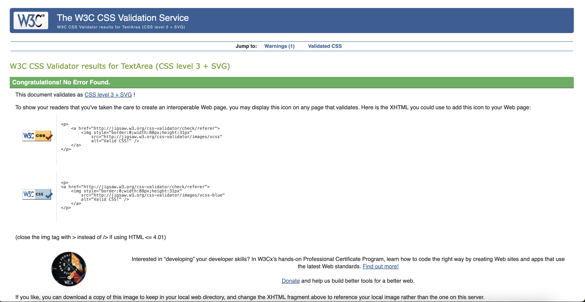
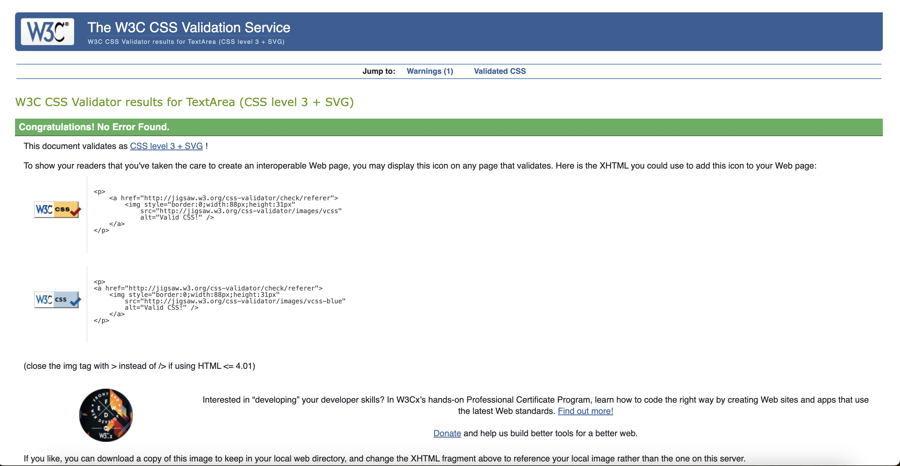

Report on learning experience of web development.
My initial stage of learning HTML and CSS was particularly rewarding as an individual who began to see my creations come to life on the web. Web development gives opportunity for high degree of creativity, designing of layouts, choosing color schemes, and implementing interactive features for total expression. The journey has been filled with lots of ups and downs, challenges and mentioning few of them starting with the ups which includes the likes of channeling out my creativity level, problem-solving skills in finding elegant solutions to complex problems can boost confidence and motivation. The downs include the likes of debugging codes and troubleshooting errors, an integral part that can be frustrating. Time consumption plays a big role as well in terms of balancing time with other responsibilities and avoiding burnouts can be highly challenging. Challenges were faced while on this journey and ways of overcoming then includes seeking help, taking breaks and being able to embrace failure and using it as a steppingstone towards success. By staying persistent and seeking support I was able to overcome obstacles and achieve tangible goals in web development.
Reflective Discussion
Reflecting on my web development module experience, I have been able to gain valuable insights into the complex of building dynamic and engaging websites. I have encountered both challenges and triumphs, each contributing to my growth as a web developer. From struggling with complex coding concepts to refining my design skills, the journey has been rewarding of creativity and technical proficiency. Technically I was able to create a website with a responsive design that utilizes media queries and flexible layout techniques to adapt to different screen sizes enhancing user experience. Accessibility and Performance optimization was also in consideration by ensuring fast load times and improved user engagement. With an unwavering commitment to user-centric design principles, creating an intuitive interface that seamlessly guide user through their online journey, I ensured to consider the layout and navigation, the color scheme, typography and a visual element to appeal and convey information effectively.
Validation Screenshots

 


 
